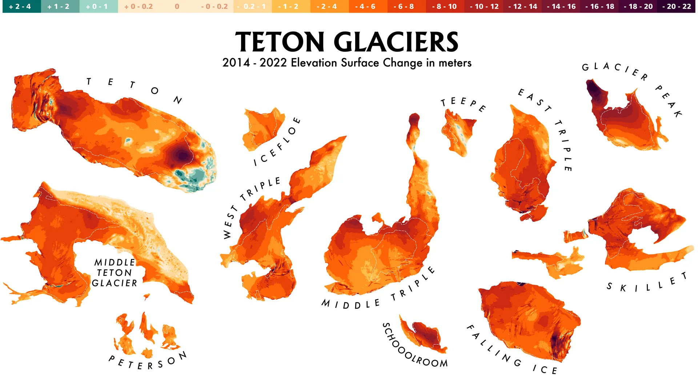
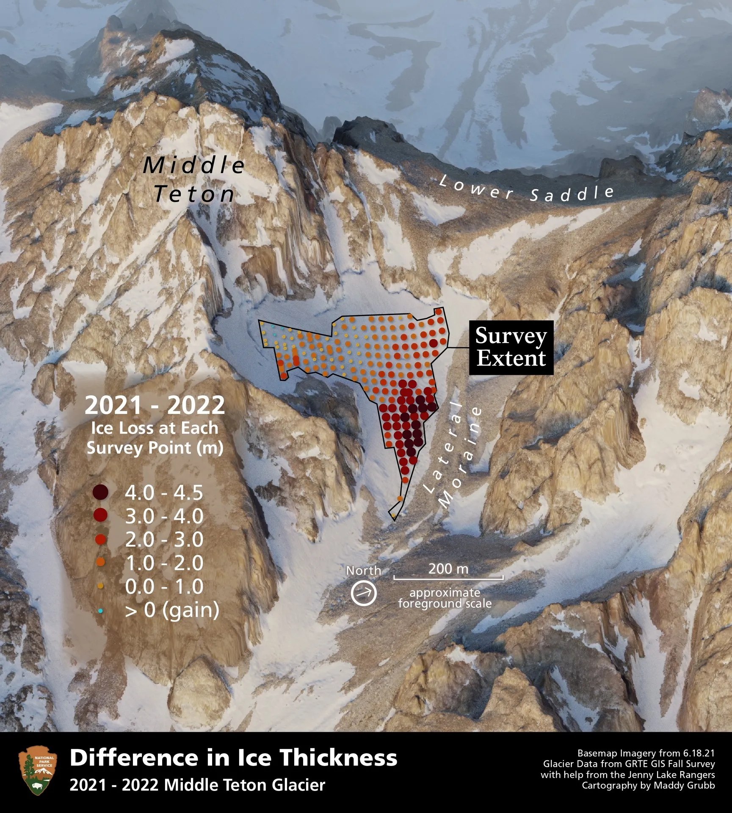
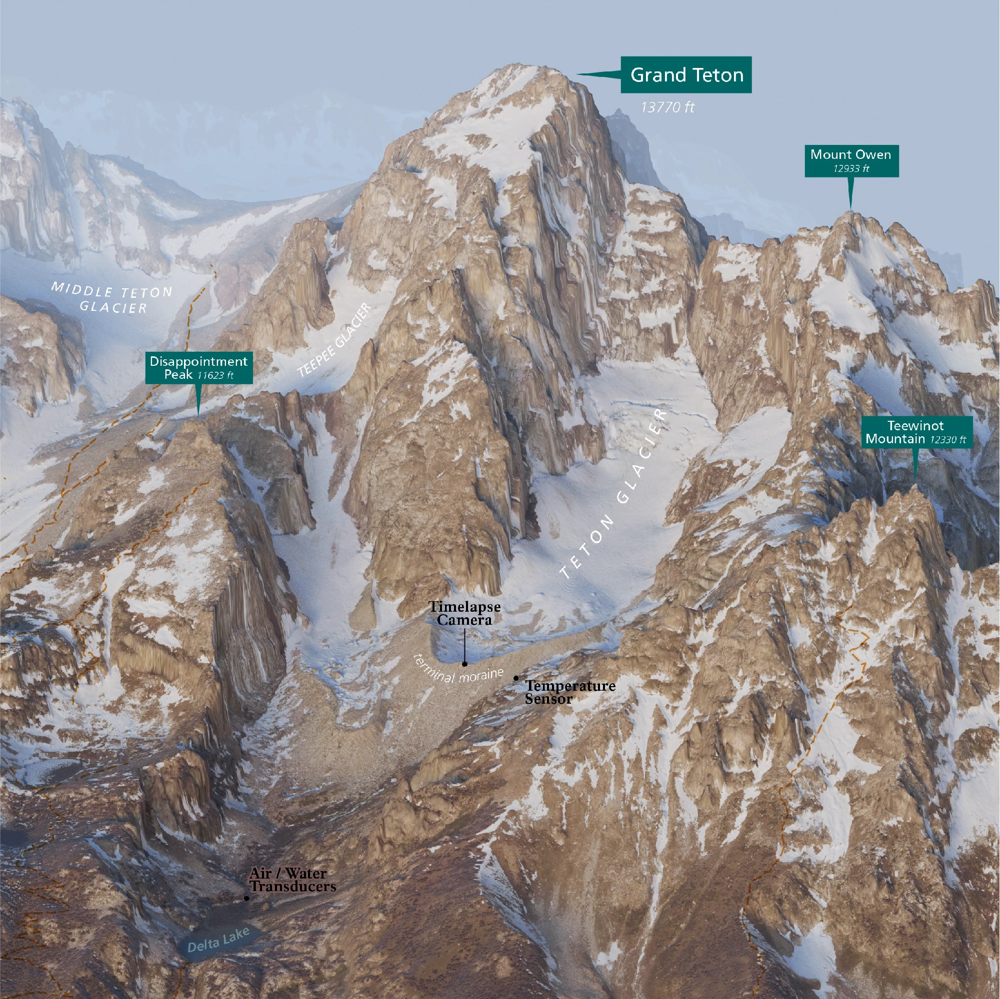
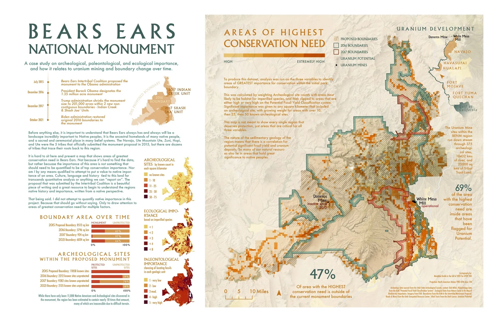
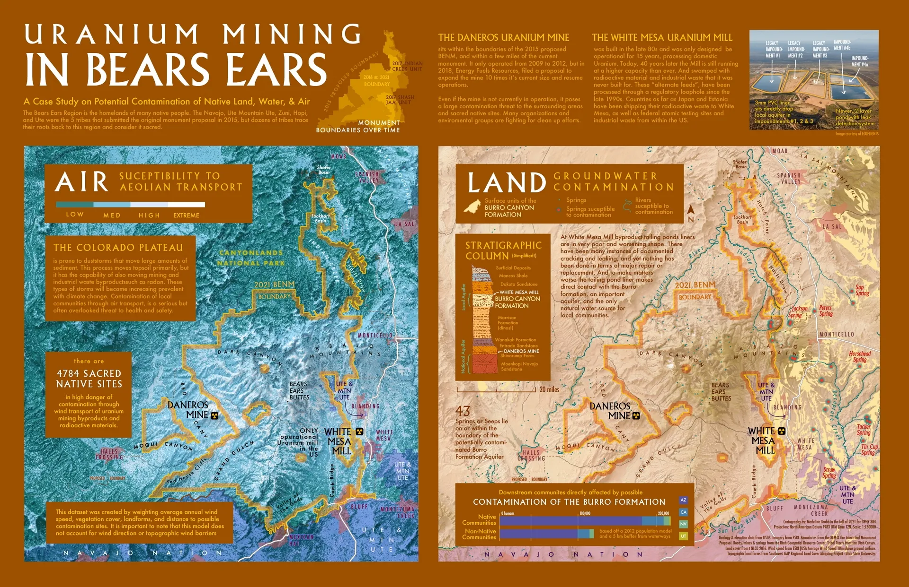
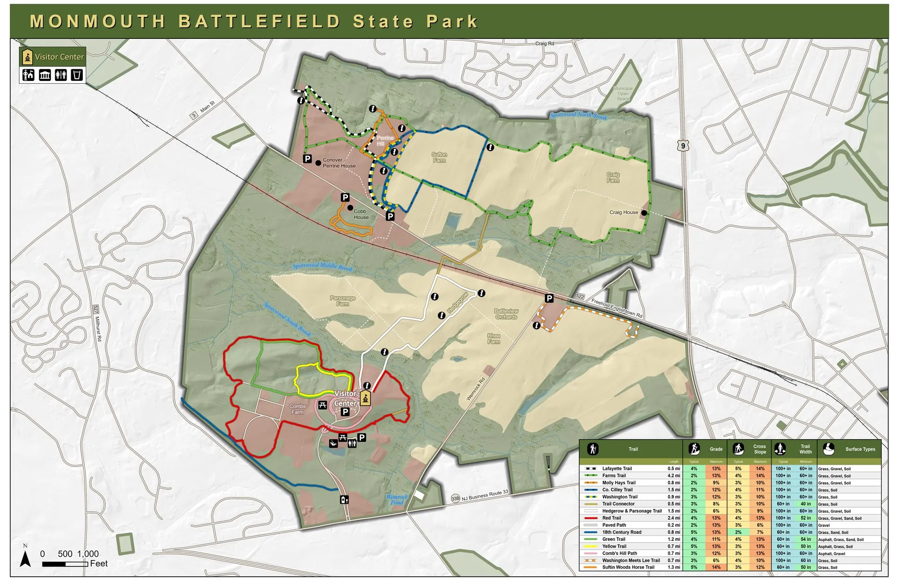
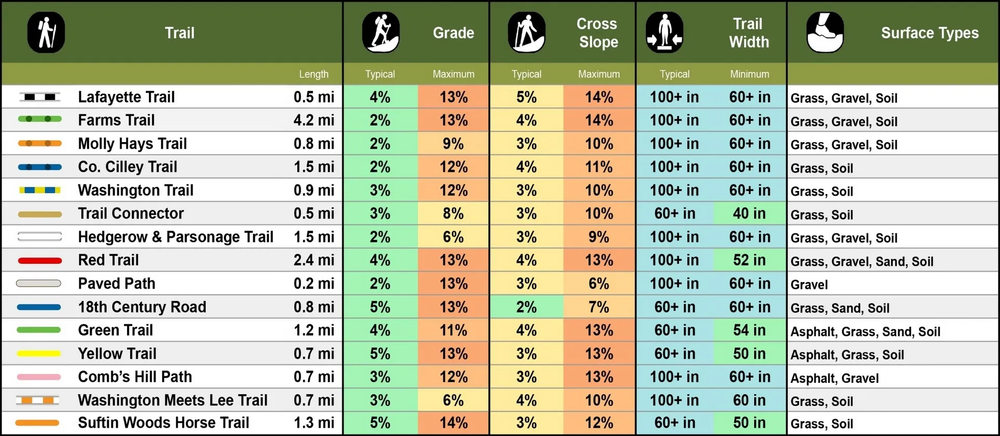

I believe maps are more than visuals: they're tools for understanding place, communicating science, and supporting informed decisions.
My work is rooted in public lands, science communication and conservation. I spent several years as a cartographer for Grand Teton National Park, creating maps used by scientists, land managers, and the public.
Today, I work independently with nonprofits and community-focused organizations to create maps that help advance conservation, climate resilience, and public understanding of science & places.
Climate

This project has focused on mapping and documenting the remaining glaciers of the Teton Range as a way to better understand landscape change and communicate the realities of a warming climate.
Drawing on historical records, field data from survey work, and aerial imagery & lidar, I created maps that show glacier extent, elevation, and change over time. These maps were designed to support both scientific context and public understanding: translating complex, long-term environmental data into visuals that are clear, accurate, and accessible.
By mapping ice carefully and consistently, we help preserve a spatial record of what exists today, while also telling a broader story about climate change in unique high-mountain environments.
Learn more about mapping Teton glaciers

Conservation

Propelled by the stripping of protections from Bears Ears National Monument in 2017, I saw a need for mapping the struggle over boundaries and conservation in this corner of Southern Utah. Working with the Utah State Archeological Society, and datasets on biodiversity and paleontology, I mapped the areas of highest conservation need in the Bears Ears region. I overlayed this with the ever changing boundaries of the monument, representing protections being stripped and re-instated for Native nations that call this region home.

The second installment of this project was to quantify the effects of uranium mining on local indigenous communities, through the lenses of water and air. Bears Ears houses the one and only active uranium mine in the United States, which receives shipments of uranium from countries as far flung as Japan and Estonia, to do the dangerous processing of radioactive waste they don't want to expose themselves to. The tailing ponds for this active mill sit directly atop the Burro Formation Aquifer; the only spring fed water source for local communities. The tailing ponds have had reported cracks and leaks, seeping waste materials into the water supply yet nothing has been done.
These maps were made to bring attention to the obvious environmental injustices that are being actively committed against local indigenous communities, and to advocate for the conservation, protection and access of the original proposed boundary of Bears Ears.
Community

In close partnership with Dovetail Trail Consulting and Joey Nadeau we created a state of the art data collection system designed to be operated by people with physical disabilities. The system collects quantitative data on metrics required by law from the Architectural Barrier Act (ABA).

The goal with collecting these 5 metrics — trail length, grade, cross slope, width, & surface type — is to be able to share objective information about individual trails so that land agencies can assess and improve the shortcomings of their trail networks, and folks using different types of mobility equipment to recreate can plan their adventures according to their specific needs. Sharing this data in a user-friendly format allows land managers to create outdoor spaces that welcome everyone.
The project consisted of designing the data collection system, remote support for field work, data processing, table and map creation for park materials and signage.
We would love to partner with you to make maps to tell your story, share your data, & make a difference in your community.